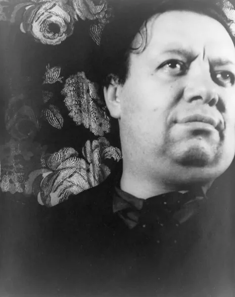
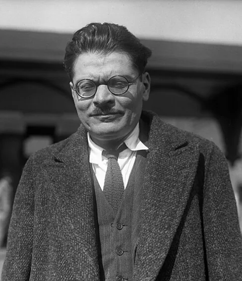
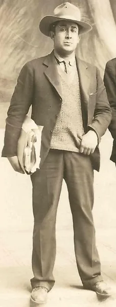
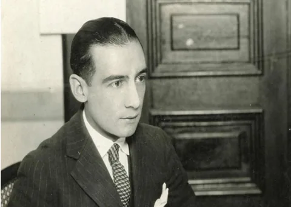

Contexto histórico de México (1920–1930)
Durante los años veinte, México se reconstruyó después de la Revolución. Los proyectos educativos y culturales favorecieron la participación de artistas en edificios públicos y promovieron debates sobre la identidad nacional.
El muralismo relacionó el arte con la historia y los conflictos sociales. El estridentismo experimentó con la ciudad, las máquinas y los medios de comunicación. Estas propuestas renovaron los lenguajes artísticos desde miradas diferentes.
Línea de tiempo
1920: Obregón asume la presidencia. 1921: se crea la Secretaría de Educación Pública; Maples Arce publica Actual No. 1.
1922: Rivera realiza La creación. 1923: Orozco y Siqueiros trabajan en los murales de San Ildefonso; aparece Irradiador.
1924: Calles asume la presidencia. Continúan los proyectos culturales y los debates sobre la función social del arte.
Durante estos años, el estridentismo desarrolla en Xalapa una intensa actividad literaria y editorial.
1928: Obregón es asesinado tras ser elegido nuevamente presidente. 1929: se funda el Partido Nacional Revolucionario.
Al cierre de la década, el muralismo ya es una referencia del arte público mexicano y continúa desarrollándose.
Artistas y referentes

representó escenas históricas, trabajadores y tradiciones culturales en obras monumentales. La creación (1922) es una referencia de los comienzos del muralismo en San Ildefonso.

desarrolló una mirada crítica sobre la violencia, los conflictos sociales y la condición humana. Sus murales en la Escuela Nacional Preparatoria fueron parte de la renovación de los años veinte.
Los Angeles Times · CC BY 4.0
participó en los primeros proyectos murales y defendió una práctica artística comprometida con la sociedad. Su búsqueda de nuevas soluciones plásticas continuó durante las décadas siguientes.

impulsó el estridentismo con Actual No. 1 (1921). Su poesía y sus manifiestos exploraron la modernidad urbana y el diálogo entre escritura, imagen y tecnología.
Muralismo
El muralismo utilizó muros de edificios públicos para representar historias, conflictos e ideas sociales. Su escala y ubicación ampliaron el acceso a las obras y lo vincularon con el proyecto educativo posrevolucionario. Rivera, Orozco y Siqueiros desarrollaron propuestas distintas, por lo que no conviene tratar sus obras como si transmitieran un único mensaje. La creación, de Rivera, permite identificar una experiencia de sus primeros años.
Estridentismo
El estridentismo comenzó con el manifiesto Actual No. 1, de Maples Arce, en 1921. Propuso una renovación de la poesía y de las artes mediante imágenes de máquinas, movimiento y vida urbana. La revista Irradiador, de 1923, fue uno de sus espacios de difusión. Sus publicaciones muestran cómo la tipografía y la ilustración podían participar en la construcción de una obra literaria experimental.
Arte público
El arte público convirtió espacios compartidos en lugares de producción y discusión cultural. Los murales de San Ildefonso ejemplifican cómo una institución educativa podía alojar obras destinadas a un público amplio. La relación entre artistas, Estado y espectadores generó debates: no todas las propuestas fueron aceptadas ni todos los creadores compartían las mismas ideas. Su importancia está en ampliar la circulación social del arte.
Identidad nacional
La identidad mexicana fue un tema de debate, no una definición única. Algunos artistas recuperaron referencias indígenas, campesinas y populares; otros dieron protagonismo a la ciudad y la tecnología. El muralismo y el estridentismo permiten comparar esas búsquedas. Mientras muchas obras murales revisaban la historia y los conflictos sociales, la experimentación estridentista exploraba la experiencia de una sociedad que se modernizaba.
¿Cómo interpretar esta vanguardia hoy?
Compará las ideas de la época con manifestaciones culturales actuales y construí una mirada propia.